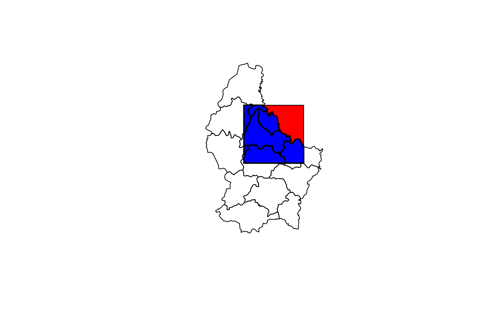

intersect.RdIt depends on the classes of the x and y what is returned.
If x is a Raster* object the extent of y is used, irrespective of the class of y, and a Raster* is returned. This is equivalent to crop.
If x is a Spatial* object, a new Spatial* object is returned. If x or y has a data.frame, these are also returned (after merging if necessary) as part of a Spatial*DataFrame.
Intersecting SpatialPoints* with SpatialPoints* uses the extent (bounding box) of y to get the intersection. Intersecting of SpatialPoints* and SpatialLines* is not supported because of numerical inaccuracies with that. You can use buffer, to create SpatialPoygons* from SpatialLines* and use that in intersect.
# S4 method for Extent,ANY
intersect(x, y)
# S4 method for Raster,ANY
intersect(x, y)
# S4 method for SpatialPoints,ANY
intersect(x, y)
# S4 method for SpatialPolygons,SpatialPolygons
intersect(x, y)
# S4 method for SpatialPolygons,SpatialLines
intersect(x, y)
# S4 method for SpatialPolygons,SpatialPoints
intersect(x, y)
# S4 method for SpatialLines,SpatialPolygons
intersect(x, y)
# S4 method for SpatialLines,SpatialLines
intersect(x, y)Extent, Raster*, SpatialPolygons*, SpatialLines* or SpatialPoints* object
same as for x
if x is an Extent object: Extent
if x is a Raster* object: Raster*
if x is a SpatialPoints* object: SpatialPoints*
if x is a SpatialPolygons* object: SpatialPolygons*
if x is a SpatialLines* object and if y is a SpatialLines* object: SpatialPoints*
if x is a SpatialLines* object and if y is a SpatialPolygons* object: SpatialLines*
e1 <- extent(-10, 10, -20, 20)
e2 <- extent(0, 20, -40, 5)
intersect(e1, e2)
#> class : Extent
#> xmin : 0
#> xmax : 10
#> ymin : -20
#> ymax : 5
#SpatialPolygons
p <- shapefile(system.file("external/lux.shp", package="raster"))
b <- as(extent(6, 6.4, 49.75, 50), 'SpatialPolygons')
projection(b) <- projection(p)
i <- intersect(p, b)
plot(p)
plot(b, add=TRUE, col='red')
plot(i, add=TRUE, col='blue', lwd=2)
